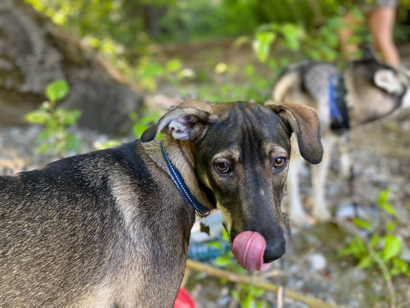

Originally from Montana, I love being in the Pacific Northwest due to all the great outdoor activities and options for either mountain recreation,
freshwater, or ocean access. Hiking and camping are some of my favorite things to do in my spare time and I am grateful for all the opportunities
available here. Regardless of the weather I will brave the out of doors for camping or hiking adventures.
Originally from Montana, I love being in the Pacific Northwest due to all the great outdoor activities and options for either mountain recreation,
freshwater, or ocean access. Hiking and camping are some of my favorite things to do in my spare time and I am grateful for all the opportunities
available here. Regardless of the weather I will brave the out of doors for camping or hiking adventures.
 Recently I got a dog to accompany me on these many adventures – enter Frank (aka Frankenstein, Frank Fry, Frankie Bean, Frank and Beans, Butter Buns, and Hollywood) my lovely little rescued street dog. He is a constant joy and challenge, and also a great buddy for solo adventures in the woods!
I am also an avid reader, and a lover of movies. My grandparents used to run a theatre in the little town of Superior Montana when I was growing up. Going to “the show” was a favorite for the whole family. I always loved being able to sit in the overlook next to the projector room with my giant tub of popcorn – it was the best seat in the house as you could look down over the audience as well as see the screen without having someone’s head in the way. Well before my time this was called the "cry room" where mothers could take their crying babies without disturbing the other patrons. Coming from a small town and spending a lot of time with family prepared me to enjoy things like playing games, reading, putting puzzles together.
I’ve been in the PNW for quite some time now, but always travel home at least once a year. Since I’ve been here, I launched a career at AT&T and worked there for much of my adult career. Getting laid off a couple years ago has proved a challenge and has led me back to school to gain some new skills to be more competitive in the job market. So here I am learning some HTML, and development skills to stay competative in the work world.